File: 000360.gt.txt (if the image is defective, simply delete all Arabic text and the line will be excluded)
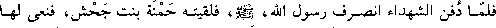
فلما دفن الشهداء انصرف رسول الله، صلى الله عليه وآله وسلم، فلقيته حمنة بنت جحش، فنعى لها
File: 000361.gt.txt (if the image is defective, simply delete all Arabic text and the line will be excluded)
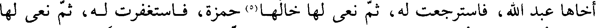
أخاها عبد الله، فاسترجعت له، ثم نعى لها خالها(5) حمزة، فاستغفرت له، ثم نعى لها
File: 000362.gt.txt (if the image is defective, simply delete all Arabic text and the line will be excluded)
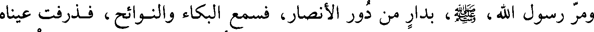
ومر رسول الله، صلى الله عليه وآله وسلم، بدار من دور الأنصار، فسمع البكاء والنوائح، فذرفت عيناه
File: 000363.gt.txt (if the image is defective, simply delete all Arabic text and the line will be excluded)
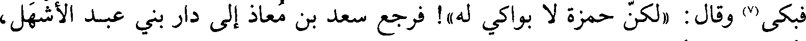
فبكي(7) وقال: ( لكن حمزة لا بواكي له)! فرجع سعد بن معاذ إلى دار بني عبد الأشهل،
File: 000364.gt.txt (if the image is defective, simply delete all Arabic text and the line will be excluded)
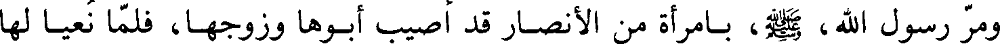
ومر رسول الله، صلى الله عليه وآله وسلم، بامرأة من الأنصار قد أصيب أبوها وزوجها، فلما نعيا لها
File: 000365.gt.txt (if the image is defective, simply delete all Arabic text and the line will be excluded)
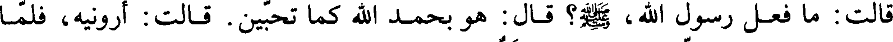
قالت: ما فعل رسول الله، صلى الله عليه وآله وسلم؟ قال: هو بحمد الله كما تحبين. قالت: أرونيه، فلما
File: 000366.gt.txt (if the image is defective, simply delete all Arabic text and the line will be excluded)
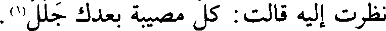
نظرت إليه قالت: كل مصيبة بعدك جلل (1) .
File: 000367.gt.txt (if the image is defective, simply delete all Arabic text and the line will be excluded)
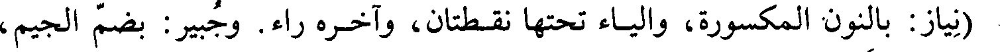
(نياز: بالنون المكسورة، والياء تحتها نقطتان، وآخره راء. وجبير: بضم الجيم،
File: 000368.gt.txt (if the image is defective, simply delete all Arabic text and the line will be excluded)
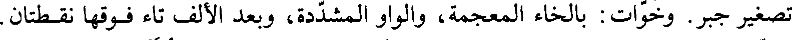
تصغير جبر. وخوات: بالخاء المعجمة، والواو المشددة، وبعد الألف تاء فوقها نقطتان.
File: 000369.gt.txt (if the image is defective, simply delete all Arabic text and the line will be excluded)
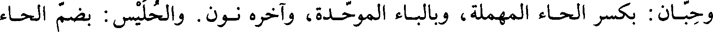
وحبان: بكسر الحاء المهملة، وبالباء الموحدة، وآخره نون. والحليس: بضم الحاء
File: 000370.gt.txt (if the image is defective, simply delete all Arabic text and the line will be excluded)
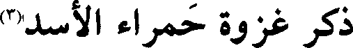
ذكر غزوة حمراء الأسد(3)
File: 000371.gt.txt (if the image is defective, simply delete all Arabic text and the line will be excluded)
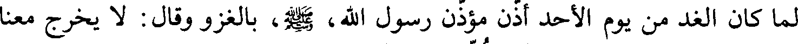
لما كان الغد من يوم الأحد أذن مؤذن رسول الله، صلى الله عليه وآله وسلم، بالغزو وقال: لا يخرج معنا
File: 000372.gt.txt (if the image is defective, simply delete all Arabic text and the line will be excluded)
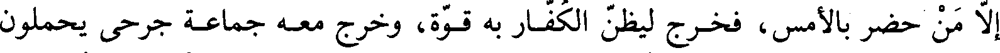
إلا من حضر بالأمس، فيخرج ليظن الكفار به قوة، وخرج معه جماعة جرحى يحملون
File: 000373.gt.txt (if the image is defective, simply delete all Arabic text and the line will be excluded)
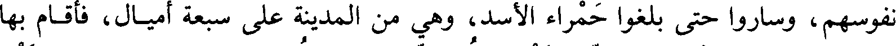
نفوسهم، وساروا حتى بلغوا حمراء الأسد، وهي من المدينة على سبعة أميال، فأقام بها
File: 000374.gt.txt (if the image is defective, simply delete all Arabic text and the line will be excluded)
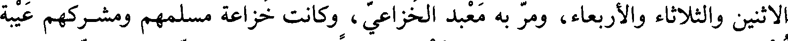
الاثنين والثلاثاء والأربعاء، ومر به معبد الخزاعي، وكانت خزاعة مسلمهم ومشركهم عيبة
File: 000375.gt.txt (if the image is defective, simply delete all Arabic text and the line will be excluded)
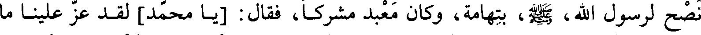
نصح لرسول الله، صلى الله عليه وآله وسلم، بتهامة، وكان معبد مشركا، فقال: [يا محمد] لقد عز علينا ما
File: 000376.gt.txt (if the image is defective, simply delete all Arabic text and the line will be excluded)
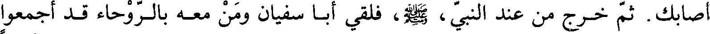
أصابك. ثم خرج من عند النبي، صلي الله عليه و سلم، فلقي أبا سفيان ومن معه بالروحاء قدأجمعوا
File: 000377.gt.txt (if the image is defective, simply delete all Arabic text and the line will be excluded)
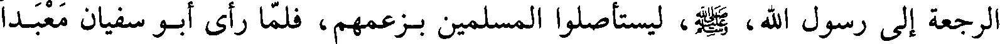
الرجعة إلى رسول الله، صلى الله عليه وآله وسلم، ليستأصلوا المسلمين بزعمهم، فلما رأى أبو سفيان معبدا
File: 000378.gt.txt (if the image is defective, simply delete all Arabic text and the line will be excluded)
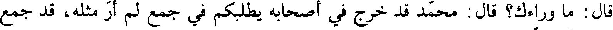
قال: ما وراءك؟ قال: محمد قد خرج في أصحابه يطلبكم في جمع لم أر مثله، قد جمع
File: 000379.gt.txt (if the image is defective, simply delete all Arabic text and the line will be excluded)
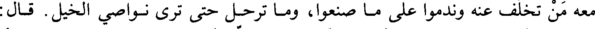
معه من تخلف عنه وندموا على ما صنعوا وما ترحل حتى ترى نواصي الخيل قال
File: 000380.gt.txt (if the image is defective, simply delete all Arabic text and the line will be excluded)
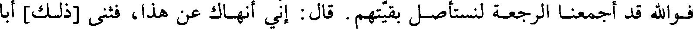
فوالله قد أجمعنا الرجعة لنستأصل بقيتهم. قال: إني أنهاك عن هذا، فثنى [ذلك] أبا
File: 000381.gt.txt (if the image is defective, simply delete all Arabic text and the line will be excluded)
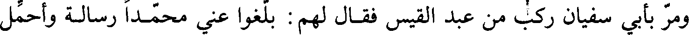
ومر بأبي سفيان ركب من عبد القيس فقال لهم: بلغوا عني محمدا رسالة وأحمل
File: 000382.gt.txt (if the image is defective, simply delete all Arabic text and the line will be excluded)
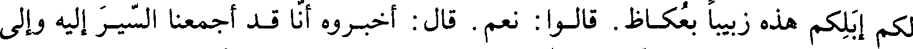
لكم إبلكم هذه زبيبا بعكاظ. قالوا: نعم. قال: أخبروه أنا قد أجمعنا السير إليه وإلى
File: 000383.gt.txt (if the image is defective, simply delete all Arabic text and the line will be excluded)
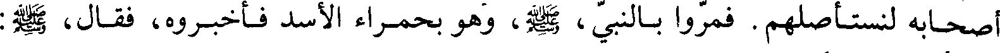
أصحابه لنستأصلهم. فمروا بالنبي، صلي عليه و سلم، وهو بحمراء الأسد فأخبروه، فقال، صلي الله عليه و سلم:
File: 000384.gt.txt (if the image is defective, simply delete all Arabic text and the line will be excluded)
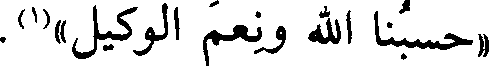
(حسبنا الله ونعم الوكيل)(1).
File: 000385.gt.txt (if the image is defective, simply delete all Arabic text and the line will be excluded)
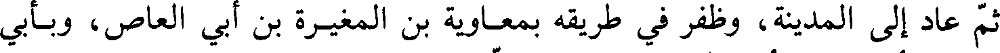
ثم عاد إلى المدينة، وظفر في طريقه بمعاوية بن المغيرة بن أبي العاص، وبأبي
File: 000386.gt.txt (if the image is defective, simply delete all Arabic text and the line will be excluded)
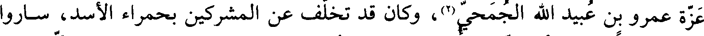
عزة عمرو بن عبيد الله الجمحي(2)، وكان قد تخلف عن المشركين بحمراء الأسد، ساروا
File: 000387.gt.txt (if the image is defective, simply delete all Arabic text and the line will be excluded)
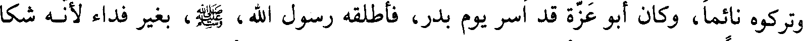
وتركوه نائما، وكان أبو عزة قد أسر يوم بدر، فأطلقه رسول الله، صلي الله عليه و سلم، بغير فداء لأنه شكا
File: 000388.gt.txt (if the image is defective, simply delete all Arabic text and the line will be excluded)
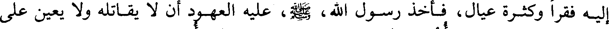
إليه فقرا وكثرة عيال، فأخذ رسول الله، صلي الله عليه و سلم، عليه العهود أن لا يقاتله ولا يعين على
File: 000389.gt.txt (if the image is defective, simply delete all Arabic text and the line will be excluded)
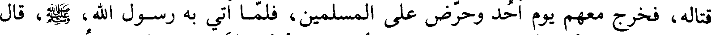
قتاله، فخرج معهم يوم أحد وحرض على المسلمين، فلما أتي به رسول الله، صلي الله عليه و سلم، قال
To Save: `Ctrl+s`, make sure to choose `Webpage, complete`!